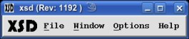

XSD is an X/Motif application to view seismic data. It was originally written in the early 1990's at Amoco by Doug Horn and passed along to Bob Mars, David Nelson and Jerry Ehlers. This is the first attempt to fully document the program. It now is able to display any dataset that is readable by DDS. It supports 8-bit color, 15, 16 and 24-bit True Color. The colormaps can be manipulated for individual data display windows to help bring out specific data features.  When first run, it should bring the Main Window with a limited set of menu options. XSD uses a separate program, ddsServer, which can either be run locally or remotely on another server via either "rsh" or "ssh". The "ddsServer" program uses DDS to open remote files, read selected data, scale and compress the data Samples to single bytes and send the resulting image back to the XSD client. Thus, it can only approximate the original Sample values, and is only as accurate as the precision of a byte.
It is alway better to run the ddsServer remotely so it will be local to the data and thus be faster at reading the file. Make sure to run XSD locally, however, because once data is retrieved from the ddsServer, the responsiveness to user manipulation and viewing is much better. View the xsd manpage for the various command line parameters available.
| RESOURCE | DEFAULT |
| *background | #e0e0e0 |
| *foreground | #000000 |
| *text*background | #fff7e9 |
| *hightlightColor | #808080 |
| *selectColor | #ff0000 |
| *font | -adobe-*-bold-r-*-*-*-140-*-*-m-*-*-* |
| *font.name | -adobe-*-bold-r-*-*-*-140-*-*-m-*-*-* |
| *fontList | -adobe-*-bold-r-*-*-*-140-*-*-m-*-*-* |
| *fontSet | -adobe-*-bold-r-*-*-*-140-*-*-m-*-*-* |
| *doubleClickInterval | 1000 |
xsd port=55060
will setup to run the ddsServer remotely through the port.
(See Start Server for alternate methods
for connecting to the ddsServer)